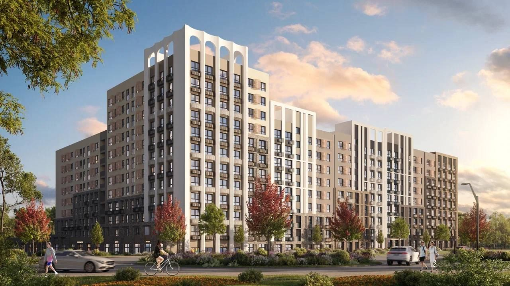

Квартира у моря · стройка · сдача 2027 Визуализация застройщикаСвоё у моря + сдача · Анапа, Супсех
ЖК «Хозяин Морей»
- Локация
- пос. Супсех, у заповедника Утриш; до моря 10–15 минут пешком
- Застройщик
- ГК «ТОЧНО», 9 корпусов по 8–12 этажей, бизнес-класс
- Цена от
- 8 375 400 ₽ — студия 33 м², white box
- Сдача
- 2027 год, ДДУ по 214-ФЗ, эскроу
- Прогноз
- 1,8–5,0% годовых от посуточной аренды (базовый сценарий — 2,7%)
- Инфраструктура
- бассейны, SPA, ресторан, школа на 1 100 мест, 2 детсада, подземный паркинг
Честно: как чистая инвестиция на средних цифрах рынка этот объект вкладу проигрывает. Он для тех, кто хочет своё у моря. 4 недели в сезон стоят около 61 400 ₽ недополученного дохода, а снять похожую студию на те же недели обошлось бы примерно в 126 000 ₽.
| Сезон: 4 500 ₽ × 122 ночи × 75% | 411 750 ₽ |
| Межсезонье: 2 500 ₽ × 243 ночи × 25% | 151 875 ₽ |
| − Управляющий 25% и сервисы бронирования 10% | −197 269 ₽ |
| − Коммуналка и износ | −124 181 ₽ |
| − НПД 4% и налог на имущество | −15 550 ₽ |
| = Вам чистыми | 226 625 ₽ · ≈18 900 ₽/мес |
Против вклада через 5 лет (покупка за свои деньги, вклад 10%): −1,9 млн ₽ в базовом сценарии, в хорошем — на уровне вклада. Стресс-тест (межсезонье 20%, УК 30%): 140 000 ₽ в год.
Минусы: 1) доход от посуточной аренды ниже вклада — объект про жизнь у моря, а не про доходность; 2) стройка: сдача в 2027 году, в плохом сценарии закладываем +12 месяцев; 3) Супсех — не центр: до центрального пляжа около 15 минут на машине, зимой посёлок тихий.
Проверено: застройщик ✓ · эскроу ✓ · договор по 214-ФЗ ✓
Данные о ЖК: сайт застройщика, anapanovostroy.ru, integrity-estate.ru. Цена ночи и загрузка — средние по Анапе (Авито, АиФ-Юг).